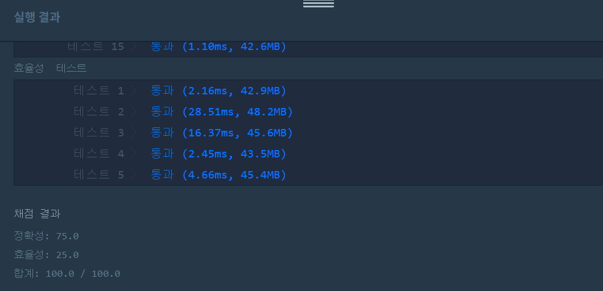

문제
https://programmers.co.kr/learn/courses/30/lessons/43237
( ᐛ )و 도전
1. 설계
- budgets를 오름차순 정렬한다.
- 배열의 요청금액 합<=M이면 제일 큰 값(최대의 예산을 리턴해야하므로)을 리턴한다.
- 아니라면 이분탐색을 통해 중간값을 찾는다.
2. 구현 (성공 코드)
import java.util.*;
/**
*
* @author HEESOO
*
*/
class Solution {
public int solution(int[] budgets, int M) {
Arrays.sort(budgets);
int answer = 0;
long sum=0;
int min=0;
int max=budgets[budgets.length-1];
int mid=0;
int preMid=0;
for(int bgt:budgets){
sum+=bgt;
}
if(sum<=M) return budgets[budgets.length-1];//요청금액 그대로 배정 가능하므로 제일 큰 예산 리턴
//모든 요청이 배정될 수 없는 경우
while(true){
sum=0;
mid=(min+max)/2;
if(preMid==mid){//중간값 변동이 없다면
answer=mid;
break;
}
for(int bgt:budgets){
if(bgt>mid) sum+=mid;//상한값보다 요청금액이 크면 상한값을 배정
else sum+=bgt;
}
if(sum>M) max=mid;
else min=mid;
preMid=mid;
}
return answer;
}
}
3. 결과
 성공٩(˘◊˘)۶
4. 설명
- 모든 예산요청을 배정할 수 있다면 최댓값을 리턴한다.
- 요청한 금액을 그대로 배정하므로 제일 큰 예산인 budgets[마지막]을 리턴한다.
- 이분탐색을 통해 상한액을 찾는다.
- 중간값을 계산하고, 배열을 순회하며 중간값보다 금액이 크다면 중간값을 부여한다.
- 총액이 M을 넘어간다면 max를 mid으로 조정, 반대라면 min을 mid로 조정한다.
- mid의 값 변동이 없을 때까지 반복한다.
- 이때 min의 초기값은 0 또는 배열총액/갯수로 해야한다. 배열의 첫 번째 값(최솟값)으로 초기화했더니 테스트9에서 실패했다. 최저예산>(총예산/도시수)일 경우라는데 무슨 말인지 잘 모르겠고 그냥 최솟값이니까 0으로 초기화하는게 제일 깔끔한 것 같다.
해결 완료!
이분탐색 코드는 어렵지 않은데 문제를 보면 이게 이분탐색 문제라는게 감이 안온다. 문제 유형 없었으면 전혀 몰랐을 듯.